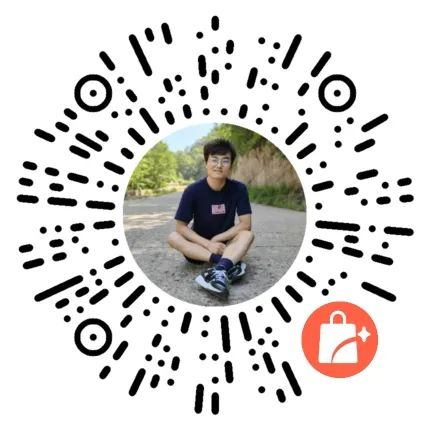

C/C++学习路线之Windows软件开发（非常详细）
这里所说的 Windows 软件是指带有炫酷界面，可以使用鼠标点击，能够安装在电脑上的那种程序，例如 QQ、迅雷、微信、Microsoft Office、Adobe Photoshop 等。
Windows 软件还有很多其它称呼，比如：
其实很多小伙伴都对 Windows 软件开发感兴趣，期望做出一款炫酷拉风的实用工具，只是不知道具体的学习路线，比如：
如果你也有这些困惑，请一定要关注这篇文章，我将帮你梳理出一个完整的 Windows 软件开发学习路线。
和互联网上其他博主分享的学习路线相比，这套学习路线不仅更加完整和详细，而且还会帮你做出选择和取舍，让你尽快学有所成，找到成就感和满足感。
注意，拥有选择权是一件非常重要的事情！
Windows 软件开发涉及到的技能板块非常繁杂，短期内不可能全部都掌握，为了加快学习进度，尽早开发出一款实用的软件，我们需要暂时先舍弃一些技能，或者对一些技能浅尝辄止，等到以后有余力了再回来学习。
这套学习路线就肩负了这个使命，它将告诉你各种技能在不同场景下的重要程度，让你知道如何选择，避免折腾和踩坑。
这套学习路线囊括了 10 个大的技能板块，总计 5800 多字。
软件开发的技术栈迭代非常快速，学习路线不是一成不变的，随着时间推移，后续我们还会添加其它新技能，或者删除已有的陈旧技能。
和一群优秀的人在一起，你也将变得不同凡响。
C/C++ Windows 软件开发学习路线的目前售价为 29.9 元，后续我们还会继续向路线中添加学习资料包，包括书籍、视频、文档等，届时售价将提升为 39.9 元。
使用微信扫描以下二维码进入我的小店购买代金券：
购买以后请联系我核销，我会把大家拉进微信群，并以文档的形式发送学习路线。
微信扫描以下二维码联系/咨询我：

微信扫码加好友
Windows 软件还有很多其它称呼，比如：
- Windows 界面程序
- Windows 客户端程序
- Windows GUI 程序
- Windows 桌面软件
其实很多小伙伴都对 Windows 软件开发感兴趣，期望做出一款炫酷拉风的实用工具，只是不知道具体的学习路线，比如：
- 需要掌握哪些技能，每种技能都需要掌握到什么程度？
- 先学什么，再学什么，具体学习顺序是怎样的？
- 哪些技能可以暂时跳过，哪些技能可以浅尝辄止，哪些技能必须深入学习？
- 自己玩该怎么学习，找工作该怎么学习？
如果你也有这些困惑，请一定要关注这篇文章，我将帮你梳理出一个完整的 Windows 软件开发学习路线。
和互联网上其他博主分享的学习路线相比，这套学习路线不仅更加完整和详细，而且还会帮你做出选择和取舍，让你尽快学有所成，找到成就感和满足感。
注意，拥有选择权是一件非常重要的事情！
Windows 软件开发涉及到的技能板块非常繁杂，短期内不可能全部都掌握，为了加快学习进度，尽早开发出一款实用的软件，我们需要暂时先舍弃一些技能，或者对一些技能浅尝辄止，等到以后有余力了再回来学习。
这套学习路线就肩负了这个使命，它将告诉你各种技能在不同场景下的重要程度，让你知道如何选择，避免折腾和踩坑。
这套学习路线囊括了 10 个大的技能板块，总计 5800 多字。
永久更新
我们承诺，这套学习路线将永久更新，没有终点，没有止境。要立 flag，就立一个不会倒下的 flag！软件开发的技术栈迭代非常快速，学习路线不是一成不变的，随着时间推移，后续我们还会添加其它新技能，或者删除已有的陈旧技能。
微信群
这套学习路线还包含了一个微信群，读者可以在群里交流互动，分享 Windows 软件开发的一些心得体会。和一群优秀的人在一起，你也将变得不同凡响。
购买细节
一次付费，永久有效，包括学习路线和微信群。C/C++ Windows 软件开发学习路线的目前售价为 29.9 元，后续我们还会继续向路线中添加学习资料包，包括书籍、视频、文档等，届时售价将提升为 39.9 元。
使用微信扫描以下二维码进入我的小店购买代金券：

微信扫码购买
微信扫码购买
购买以后请联系我核销，我会把大家拉进微信群，并以文档的形式发送学习路线。
微信扫描以下二维码联系/咨询我：
微信扫码加好友
注意：该学习路线属于「站长严长生」公众号发布的原创作品，并不包含在 VIP 会员中。
关注公众号「站长严长生」，在手机上阅读所有教程，随时随地都能学习。内含一款搜索神器，免费下载全网书籍和视频。

微信扫码关注公众号